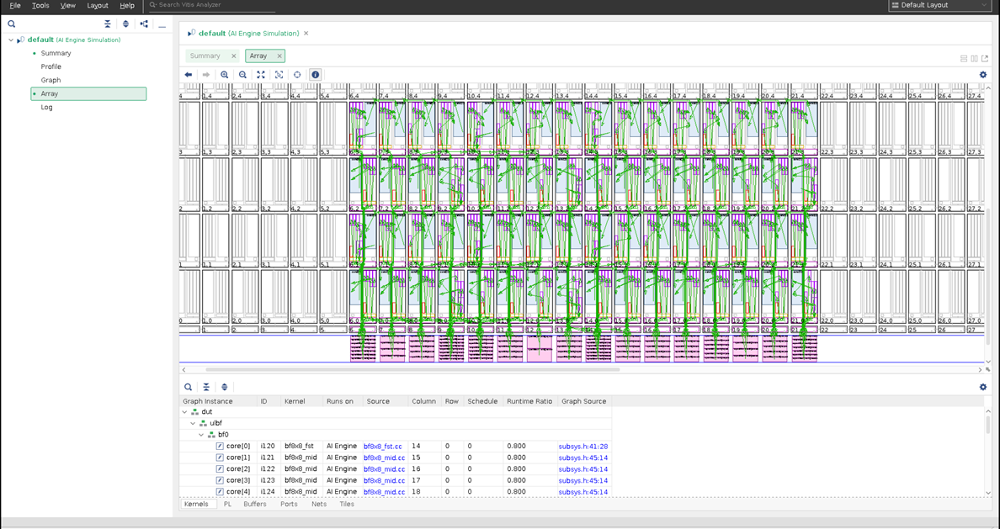

Version: Vitis 2021.2
System level debug of AI Engine designs that could use up to 400 tiles in the AI Engine domain, PL interfaces and kernels, and PS application can be done at several stages in the design flow. System level debug of AI Engine designs can be categorized as follows:
Functional debug that involves techniques to uncover bugs in the AI Engine kernel source code.
Performance level debug that involves debug techniques to uncover reasons for throughput drop or reasons for larger latencies when the AI Engine graph is run either in simulation or in hardware.
Techniques to uncover both functional and performance level bugs are described in the following sections.
Source level debug includes visibility into register contents view, variable values view, breakpoints view, and hence necessitates a GUI. The Vitis™ integrated design environment (IDE) is the tool that supports these debug requirements. This tutorial demonstrates how to use the Vitis IDE to manage these challenges and additional tools and methodologies to assist with your design debug.
IMPORTANT: Before beginning the tutorial make sure you have read and followed the Vitis Software Platform Release Notes (v2021.2) for setting up software and installing the VCK190 base platform.
Before starting this tutorial run the following steps:
Set up your platform by running the xilinx-versal-common-v2021.2/environment-setup-cortexa72-cortexa53-xilinx-linux script as provided in the platform download. This script sets up the SYSROOT and CXX variables. If the script is not present, you must run the xilinx-versal-common-v2021.2/sdk.sh.
Set up your ROOTFS to point to the xilinx-versal-common-v2021.2/rootfs.ext4.
Set up your IMAGE to point to xilinx-versal-common-v2021.2/Image.
Set up your PLATFORM_REPO_PATHS environment variable based upon where you download the platform.
This tutorial targets the VCK190 ES board (see https://www.xilinx.com/products/boards-and-kits/vck190.html). This board is currently available via early access. If you have already purchased this board, download the necessary files from the lounge and ensure you have the correct licenses installed. If you do not have a board and ES license, contact your Xilinx sales contact.
To target the VCK190 production board, modify PLATFORM variable in the Makefile(s) to: PLATFORM = ${PLATFORM_REPO_PATHS}/xilinx_vck190_base_202120_1/xilinx_vck190_base_202120_1.xpfm
The architecture of the beamformer design consists of three kernels with slight differences which are scalable to various matrix sizes and throughput requirements. The design methodology is applicable to matrix multiplication including, but not limited to, 5G wireless communication.
One feature of the beamforming architecture is that only a small number of kernels are required by various system configurations. Depending on the location of the kernels in the cascading chain, they are named first, middle, and last. All the kernels implement (8x8) times (8x12) matrix multiplication and only differ in the input and output interfaces. The first kernel in the cascading chain does not have cascading input, while the last one writes the output to local memory instead of the cascading bus.
Every beamforming kernel performs eight MAC4 operations on one column of eight inputs to compute eight outputs. Each MAC4 operation takes eight coefficients and two inputs, and stores the result in a register of 384 bits. At the end of computation, the partial summations are sent to the next AI Engine core for further accumulation, or output to local memory after shift, round, and saturation.
This design has 64 tiles and 88 programmable logic input/output (PLIO) streams that the PS application prepares input data for, sends data to AI Engine kernels via PL kernels. AI Engine kernels process the data received and then send it back to the PL kernels. The PS application receives the processed data, then saves it to the designated directory/files, compares it to golden data, and prints out “TEST PASSED” or “TEST FAILED” result on the console.
The complete beamformer design is shown in the Vitis™ analyzer. 
There are several ways to debug a system design that include PS, PL, and AI Engine or an AI Engine only design. Each method has the intended goal to help debug practice. For projects that are command-line based and would like to port to Vitis™ IDE, reference Port command-line based projects to Vitis IDE for detail steps.
For ease of use, a Vitis IDE exported project, beamformer.ide.zip can be donwloaded from https://www.xilinx.com/bin/public/openDownload?filename=beamformer.ide.zip. Then import this zip file into the Vitis IDE.
Step 0. Download data files, beamformer_data.zip from https://www.xilinx.com/bin/public/openDownload?filename=beamformer_data.zip. Unzip this file and save it at the same level as this tutorial’s Makefile.
Step 1. Source the Vitis IDE script or install the Vitis™ IDE.
Step 2. Launch the Vitis IDE using the command vitis -workspace tutorial.
Step 3. Click on File->import…. Select Vitis project exported zip file->Next. Browse to the beamformer.ide.zip file. Click Next->Finish.
Step 4. You should see the imported beamformer design in the Vitis™ IDE.
After the project is ready in the Vitis IDE, you can move on to the next steps to try out the various debug features in software and hardware emulation and also in hardware.
Note: The imported project specifies a hardware platform path that must be adjusted to your specific installed path to work correctly. Click on beamformer_system.sprj to update the hardware platform path in the Vitis™ IDE.
GitHub issues will be used for tracking requests and bugs. For questions go to support.xilinx.com.
Licensed under the Apache License, Version 2.0 (the “License”); you may not use this file except in compliance with the License. You may obtain a copy of the License at
http://www.apache.org/licenses/LICENSE-2.0
Unless required by applicable law or agreed to in writing, software distributed under the License is distributed on an “AS IS” BASIS, WITHOUT WARRANTIES OR CONDITIONS OF ANY KIND, either express or implied. See the License for the specific language governing permissions and limitations under the License.
XD005 | © Copyright 2021 Xilinx, Inc.